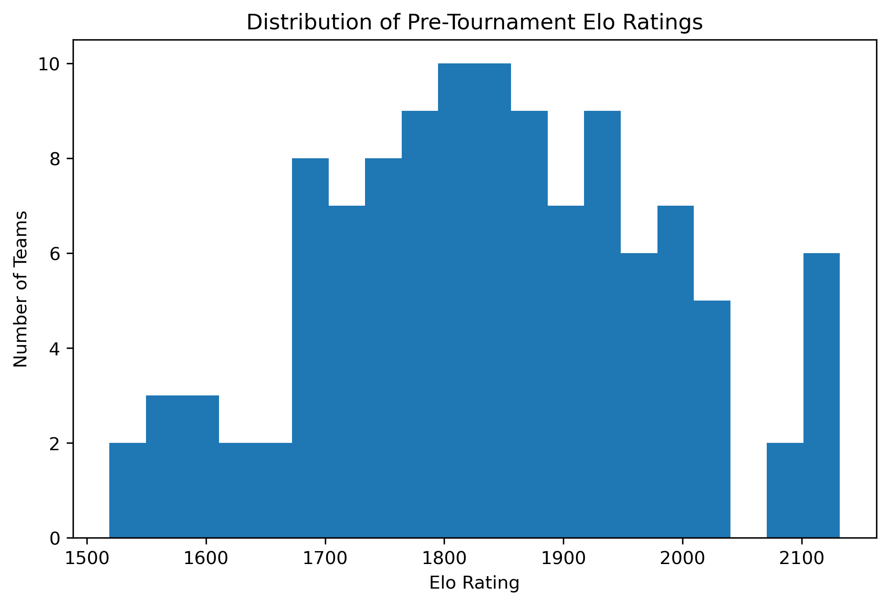
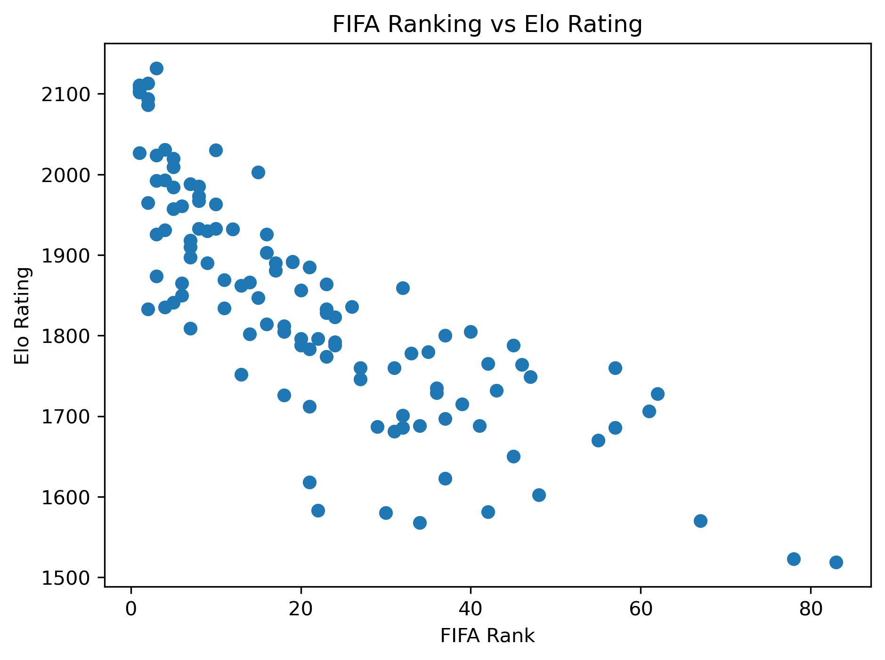
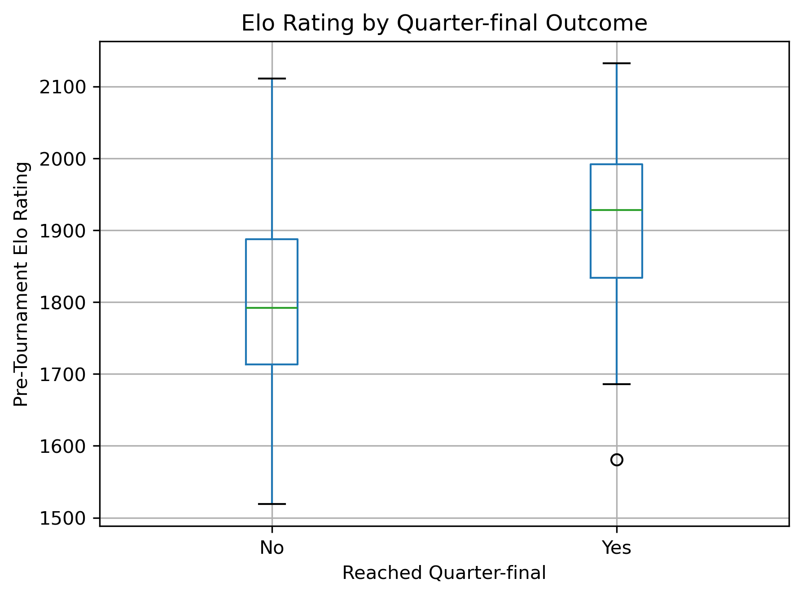
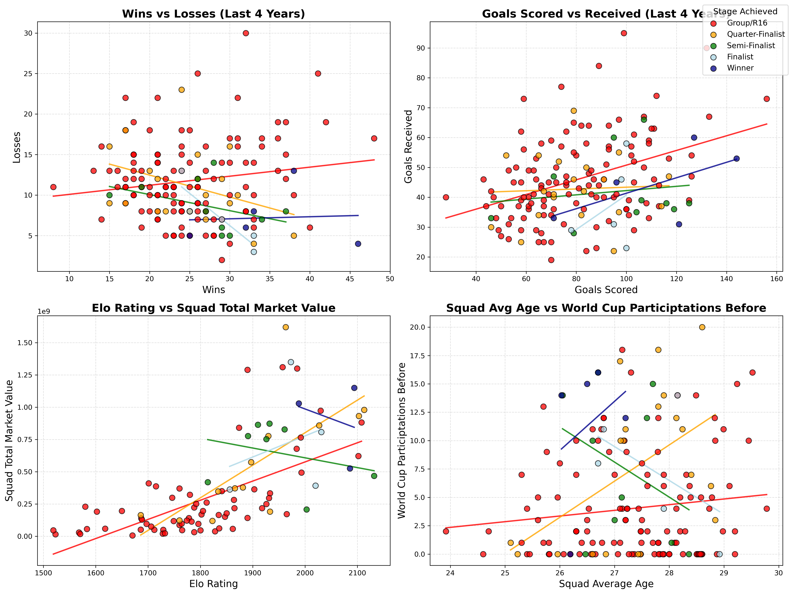

Predicting FIFA World Cup Advancement with Apache Spark Machine Learning
University of Virginia | Summer 2026
Can pre-tournament data predict how far World Cup teams advance?
Research question
Predict whether each national team reaches the quarter-finals, semi-finals, final, or wins the World Cup.
Approach
Build Spark ML pipelines using historical team performance, FIFA rankings, Elo ratings, squad value, and prior World Cup history.
Main finding
Tree-based models outperformed Logistic Regression; Gradient Boosted Trees produced the strongest overall advancement classification.
One row per national team per World Cup edition
Historical modeling data
Response variables
- Quarter-finalist
- Semi-finalist
- Finalist
- Winner
Challenge: These labels are highly imbalanced, especially finalist and winner outcomes.
Features captured team strength, form, value, and experience
Feature groups
Recent formGoals for/againstFIFA rankingElo ratingsSquad valueSquad ageWorld Cup historyContinentHost statusOnly pre-tournament information was used to avoid leakage.
Chronological split
| Dataset | Years | Rows |
|---|---|---|
| Training / CV | 2002–2018 | 160 |
| Held-out test | 2022 | 32 |
| Prediction | 2026 | 48 |
This mimics the real forecasting task: learn from past tournaments, predict a future one.
Spark ML pipeline kept preprocessing reproducible
Missing data strategy
- 32 missing squad market values, all from 2002
- Some missing historical Elo values
- Retained rows using median imputation and missing-value flags
Leakage prevention
- Used prior-year Elo snapshot
- Fit preprocessing only on training data
- Kept 2022 and 2026 out of model training
Feature distributions


Team strength and tournament advancement


Feature relationships by tournament stage

Three classifiers, four binary milestone targets
Logistic Regression
Baseline model with scaled features. Useful benchmark for linear relationships.
Random Forest
Tree ensemble that captures nonlinear effects and interactions while providing feature importance.
Gradient Boosted Trees
Sequential tree ensemble selected as champion for overall positive-class performance.
Tree-based models outperformed the logistic baseline
Held-out 2022 results
| Target | Best F1 | Best F1 model | Highest AUROC |
|---|---|---|---|
| Quarter-final | 0.63 | GBT | RF: 0.91 |
| Semi-final | 0.33 | GBT | RF: 0.77 |
| Finalist | 0.20 | GBT | RF: 0.92 |
| Winner | 0.00 | None | GBT: 0.82* |
F1 comparison
What drives tournament success?
Gradient Boosted Trees feature importance
| Rank | Feature | Importance |
|---|---|---|
| 1 | Wins, last 4 years | 0.136 |
| 2 | Squad market value | 0.105 |
| 3 | FIFA points | 0.076 |
| 4 | Squad average age | 0.071 |
| 5 | Goals received, last 4 years | 0.070 |
| 6 | Rating maximum | 0.060 |
| 7 | Goals scored, last 4 years | 0.058 |
| 8 | FIFA rank | 0.057 |
| 9 | Groups passed before | 0.056 |
| 10 | Previous quarter-finals | 0.056 |
Random Forest comparison
- RF emphasized Elo strength: rating max, average, min, and current rating.
- Previous World Cup success also ranked highly.
- Squad market value was important in both tree-based models.
Top 25 quarter-final predictions
| # | Team | Prob. |
|---|---|---|
| 1 | Ecuador | 0.998 |
| 2 | Uruguay | 0.908 |
| 3 | Paraguay | 0.852 |
| 4 | Spain | 0.800 |
| 5 | Switzerland | 0.789 |
| 6 | Belgium | 0.775 |
| 7 | Norway | 0.729 |
| 8 | Sweden | 0.719 |
| 9 | Netherlands | 0.690 |
| 10 | Ghana | 0.689 |
| 11 | Argentina | 0.594 |
| 12 | Portugal | 0.510 |
| 13 | Colombia | 0.469 |
| # | Team | Prob. |
|---|---|---|
| 14 | France | 0.370 |
| 15 | Ivory Coast | 0.363 |
| 16 | England | 0.322 |
| 17 | Austria | 0.309 |
| 18 | Senegal | 0.257 |
| 19 | Canada | 0.236 |
| 20 | Mexico | 0.228 |
| 21 | Morocco | 0.176 |
| 22 | Brazil | 0.154 |
| 23 | New Zealand | 0.129 |
| 24 | Turkey | 0.121 |
| 25 | Japan | 0.112 |
Top 25 semi-final predictions
| # | Team | Prob. |
|---|---|---|
| 1 | Netherlands | 0.933 |
| 2 | Ecuador | 0.913 |
| 3 | France | 0.883 |
| 4 | Uruguay | 0.870 |
| 5 | Norway | 0.788 |
| 6 | Spain | 0.717 |
| 7 | Germany | 0.698 |
| 8 | Portugal | 0.642 |
| 9 | Ivory Coast | 0.439 |
| 10 | Morocco | 0.418 |
| 11 | Senegal | 0.141 |
| 12 | New Zealand | 0.138 |
| 13 | DR Congo | 0.134 |
| # | Team | Prob. |
|---|---|---|
| 14 | Japan | 0.087 |
| 15 | Belgium | 0.072 |
| 16 | England | 0.064 |
| 17 | Paraguay | 0.036 |
| 18 | Sweden | 0.035 |
| 19 | Ghana | 0.030 |
| 20 | Bosnia and Herzegovina | 0.030 |
| 21 | Scotland | 0.030 |
| 22 | Cape Verde | 0.029 |
| 23 | Turkey | 0.025 |
| 24 | Croatia | 0.023 |
| 25 | Mexico | 0.023 |
Top 25 finalist predictions
| # | Team | Prob. |
|---|---|---|
| 1 | Mexico | 0.935 |
| 2 | Ecuador | 0.912 |
| 3 | Uruguay | 0.790 |
| 4 | United States | 0.753 |
| 5 | Senegal | 0.590 |
| 6 | Morocco | 0.590 |
| 7 | Ivory Coast | 0.469 |
| 8 | Egypt | 0.443 |
| 9 | Canada | 0.422 |
| 10 | South Africa | 0.422 |
| 11 | Switzerland | 0.355 |
| 12 | France | 0.227 |
| 13 | Croatia | 0.168 |
| # | Team | Prob. |
|---|---|---|
| 14 | Norway | 0.126 |
| 15 | Uzbekistan | 0.101 |
| 16 | Japan | 0.101 |
| 17 | Netherlands | 0.063 |
| 18 | Algeria | 0.059 |
| 19 | Ghana | 0.059 |
| 20 | Panama | 0.059 |
| 21 | Curaçao | 0.059 |
| 22 | Sweden | 0.057 |
| 23 | Argentina | 0.054 |
| 24 | DR Congo | 0.053 |
| 25 | Iran | 0.053 |
Top 25 champion predictions
| # | Team | Prob. |
|---|---|---|
| 1 | Paraguay | 0.022 |
| 2 | Senegal | 0.022 |
| 3 | Sweden | 0.022 |
| 4 | Turkey | 0.022 |
| 5 | Iraq | 0.022 |
| 6 | Germany | 0.022 |
| 7 | Ivory Coast | 0.022 |
| 8 | Jordan | 0.022 |
| 9 | France | 0.022 |
| 10 | DR Congo | 0.022 |
| 11 | Algeria | 0.022 |
| 12 | Argentina | 0.022 |
| 13 | Belgium | 0.022 |
| # | Team | Prob. |
|---|---|---|
| 14 | Ecuador | 0.022 |
| 15 | Qatar | 0.022 |
| 16 | Ghana | 0.022 |
| 17 | United States | 0.022 |
| 18 | Croatia | 0.022 |
| 19 | Norway | 0.022 |
| 20 | Spain | 0.022 |
| 21 | Iran | 0.022 |
| 22 | Morocco | 0.022 |
| 23 | Panama | 0.022 |
| 24 | Cape Verde | 0.022 |
| 25 | South Korea | 0.022 |
Machine learning can estimate advancement—but rare outcomes remain difficult
Conclusion
GBT delivered the strongest balance of precision, recall, and F1 across advancement milestones.
Limitations
- Only six completed World Cups in historical data
- Finalist and winner labels have very few positives
- Injuries, matchups, and tournament draw are not modeled
Future work
- Add player-level data, xG, betting odds, and injuries
- Use richer Elo snapshots and additional rating systems
- Retrain as more World Cup tournaments become available